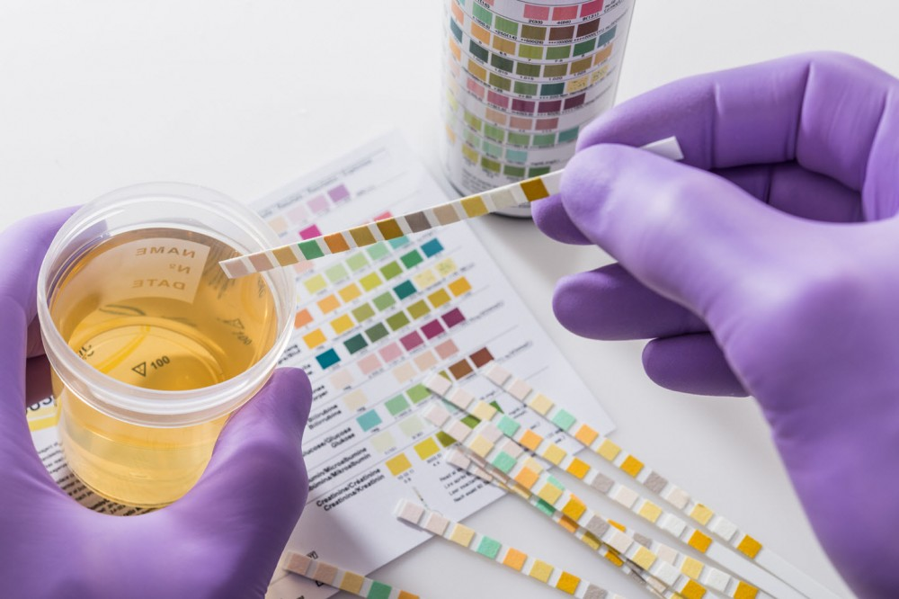

Colour testing is a fast and simple technique used to determine if an individual has drug or poison in his or her system. This technique can identify the type of drug or poison present. However, colour tests exist for only certain substances, and they cannot indicate the quantity of the suspected substance. Because of this, colour testing is always followed by a confirmation test.
In one type of colour testing, a small test strip is dipped into a urine sample. The strip changes to a specific colour when exposed to a certain drug or poison. In another colour testing technique, certain chemicals are combined with an isolated sample. A reaction that causes a colour change indicates the presence of a certain drug or poison.

In the Marquis colour test, an isolated sample is combined with formaldehyde and sulfuric acid. If the resulting solution turns purple, this indicates that the sample contains opiates.